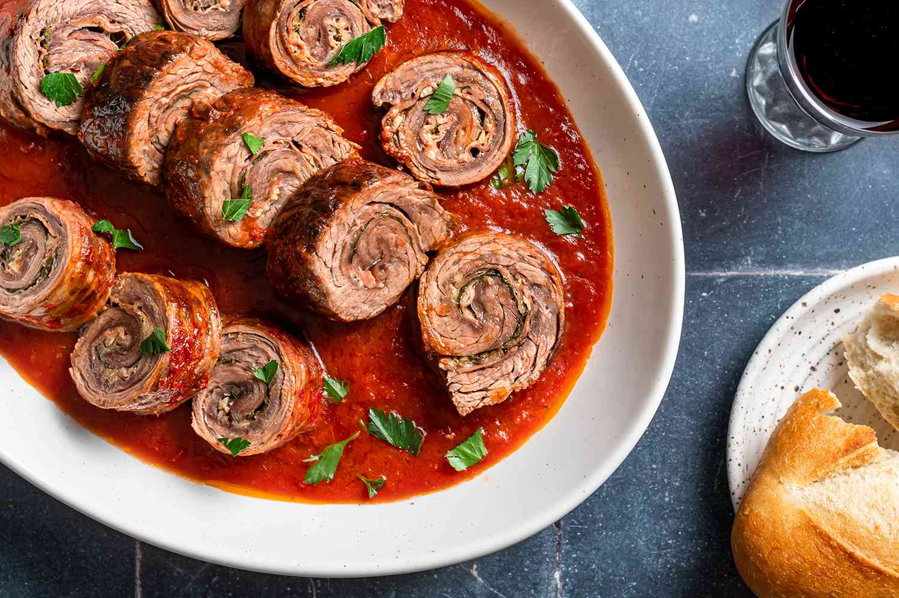
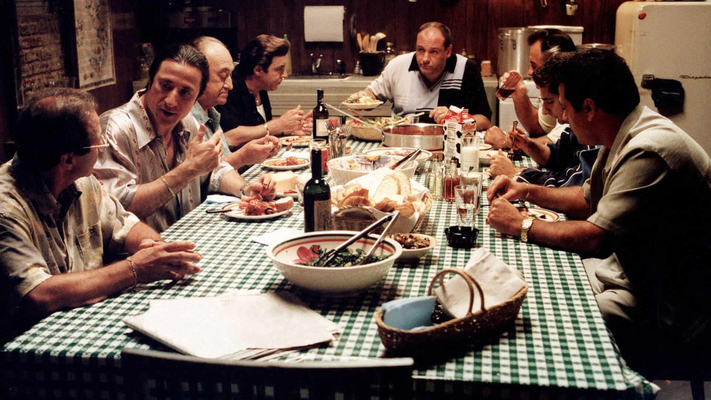

Braciole

Sicilian-style Meat Rolls: Can't Stay Away!
Made with beef, caciocavallo and pecorino cheese, involtini (meat rolls)
is an island tradition that drives both theyoung and old crazy,
especially if they’re barbecued!
Ingredients
Serves 4 people
- 1 lb thin slices of beef (carpaccio type)
- 4 oz breadcrumbs
- 1 clove garlic
- 7 oz caciocavallo cheese (better if Sicilian) or alternatively provolone
cheese
- 1 oz of Parmigiano Reggiano
- 1 oz of pecorino cheese
- parsley, extra virgin olive oil, salt, and pepper
Steps
- Chop pecorino cheese, Parmesan cheese, garlic clove, salt, pepper
and parsley. Mix everything with the breadcrumbs.
- Lay the slices of meat on a flat surface and grease them lightly with oil. Place in the middle of each one a
sprinkling of the freshly prepared mix and a cube of caciocavallo cheese.
- Roll up the meat and place several rolls (four or five) on skewers. Brush the skewers with oil and pass them
through the seasoned breadcrumbs.
- Turn on the griddle, plancha or grill (or use a simple non-stick frying pan) and cook the involtini by
turning them on both sides. You will need to obtain a lovely tasty crust.
- Serve them hot.

Mama Mia!